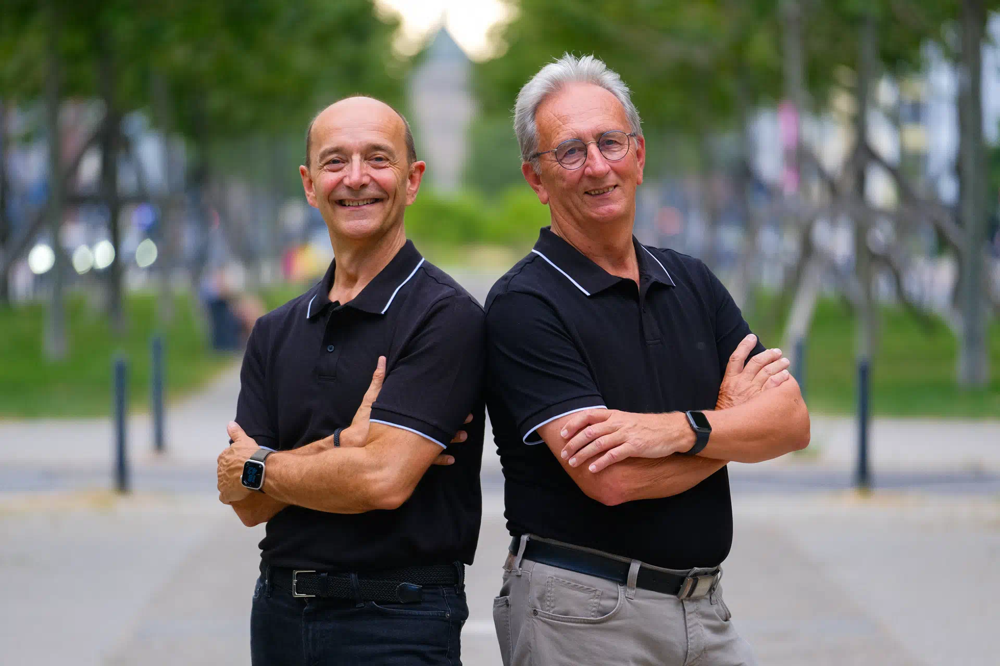
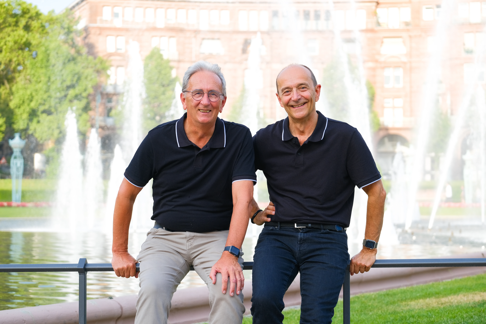

the architecture ecosystem
the architecture ecosystem
Ideas & teaching
Peter & Gernot
Initiators who connected requirements, architecture, communication, reviews, books, and training into a pragmatic whole.
Maintainers, translators, teachers, contributors
People are not decoration around arc42. They author guidance, maintain generators, review translations, teach the method, and keep examples honest.
Ideas, automation, and community all need people who keep showing up.

Ideas & teaching
Initiators who connected requirements, architecture, communication, reviews, books, and training into a pragmatic whole.
Automation & formats
Maintainer of the generator and a central link between the master template, docs-as-code, and the formats people download.

Language & reach
Translators, example authors, reviewers, tool integrators, trainers, and people who report what is broken.
A template format names its maintainer. A translation names its reviewer. An example names its authors. A guide shows its last editorial review.
László Séra · translation · 2026
Damien Lucas · translation and talks
Chris (Gentle) Y杨 and DannyGe
Guilherme Weizenmann · Pedro Mattiollo
Ivan Bulyk · Larysa Visengeriyeva